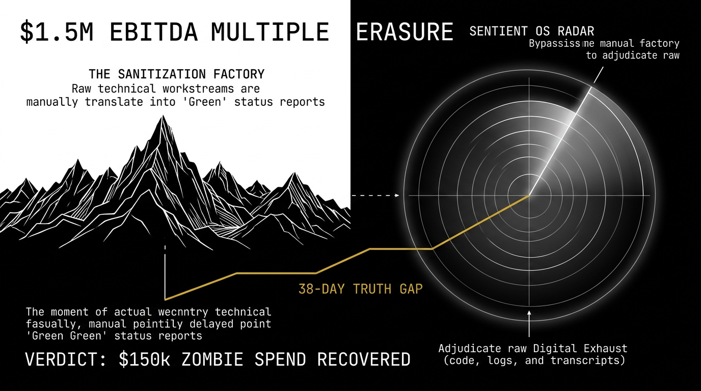

Adjudicating the financial impact of Decision Latency. Stop treating project delays as administrative friction and start treating them as capital strikes.

"DATA DOES NOT HAVE AN EGO."
Traditional PMOs rely on Human APIs—Project Managers who manually translate technical noise into sanitized status reports. This creates the Sanitization Factory.
The result is a 38-Day Truth Gap. By the time a dashboard turns "Red," the capital required to fix the issue has already been incinerated in the silence.
At a 10x multiple, an unmitigated IT delay functions as a direct strike against your P&L. We identify the fracture before it erodes your enterprise value.